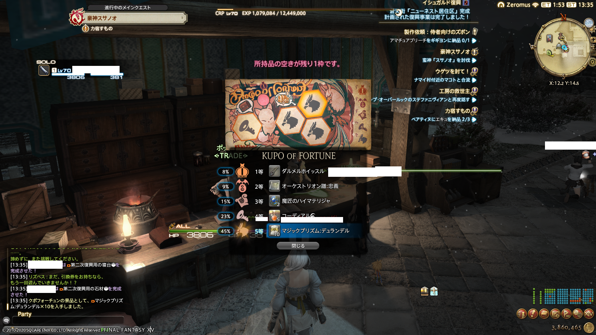

想了想其实每天想说的东西并不是很多，干脆用一个综合贴来存放比较好w 就按月分吧！然后倒序更新w
有什么值得大书特书的内容的话再单独开贴
2020-06-02 朝
吃到了好久没有吃过的虾饺。
离开广东太久，都快要忘记虾饺是什么味道了。虽然这也不是广式的虾饺，但总归让我想起一点点的回忆。
只是7-11的便利店货ww
2020-06-03 夜

不要太过分了，伊修加德人！
2020-06-04 昼
漂亮！
2020-06-05 昼
设计女儿的时候外貌衣着都是我觉得怎么好看怎么来，一换到自己身上就觉得特别烦（。
做人设的时候也好，吸别人人设的时候也好，都觉得连衣裙高跟鞋好好看；一旦自己穿高跟鞋出门就是好累好疼好难受好想回家（。好看是什么东西能吃吗（何况我并不好看
……虽然也可能是我因为疫情太久没出门去远的地方所以身体素质下降……不，等等，我身体素质有好过的时候吗……
不禁想起了还是个小女孩的时候的自己，“给女儿穿裙子很开心但我自己绝对不穿”
旧时复刻·高跟鞋Version
反正我又不好看，为什么还要穿高跟鞋打肿脸充胖子。高跟鞋是给好看的人来衬托得她更加好看的，没错吧。
2020-06-08 昼
要不是我知道一些我和其他人的现状，我可能就真信了你的鬼话。
你们没把彩虹旗全烧了就不错了，居然还拿你们留下来的一点点来宣传？
我从未见过有如此厚颜无耻之人.jpg
updated in night June 8：Rela (a SNS for LGBTQ’s L) has been banned in China region Apple Store. This is what the @People’s Daily, China called “LGBTQ quitely gains acceptance in China’s big cities”: big cities are not including Internet!
2020-06-10 夕
虽然是个YouTube视频，但还是想分享一下
无论如何都想进美术馆的小黑猫小肯，和一直把小肯抓出去的保安马屋原先生
因为美术馆的疫情期间闭馆，这两位一直没能再见，直到6月2日再次开馆，他们的攻防战才再次开始上演
真实可爱
闭馆期间小肯也来过不少次，不过看到保安先生不在它也不再往里走，他们关系真的很好w